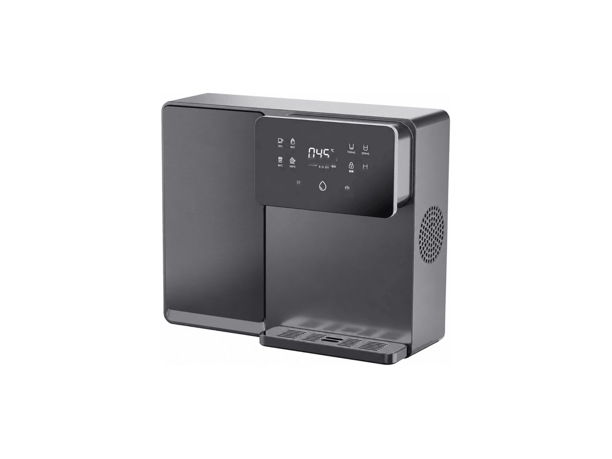
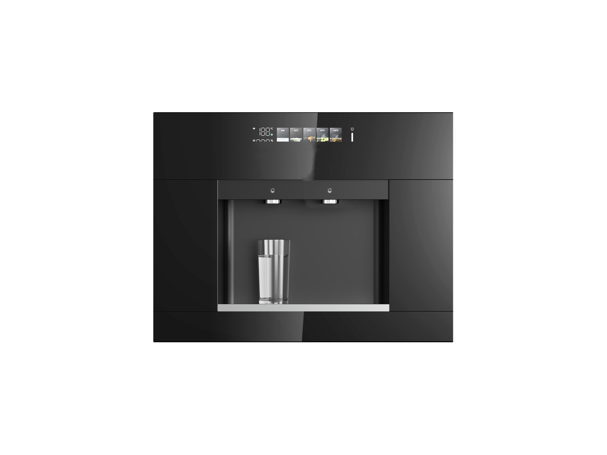

Sob a pia
Sob a piaRP-U07
Purificador RO sob a pia de 400–600 GPD
SKU: RP-U07
MOQ: confirmar ao consultar
Cada modelo abaixo é um modelo confirmado do catálogo. Modelos candidatos não estão listados aqui.
46 modelos
Nenhum modelo corresponde à sua busca. Tente outro SKU ou limpe os filtros.
Quente/Frio/Gelo é uma seleção de modelos existentes. As funções disponíveis variam por modelo.
Sob a piaPurificador RO sob a pia de 400–600 GPD
SKU: RP-U07
MOQ: confirmar ao consultar
 Sob a pia
Sob a piaRO sob a pia com aquecimento por acumulação
SKU: RP-U08
MOQ: confirmar ao consultar
 Sob a pia
Sob a piaPurificador RO de alta capacidade com acesso frontal
SKU: RP-U09
MOQ: confirmar ao consultar
 Sob a pia
Sob a piaPurificador RO de três cartuchos
SKU: RP-U11
MOQ: confirmar ao consultar
 Sob a pia
Sob a piaSistema RO de cartucho extraível sem ferramentas
SKU: RP-U01
MOQ: confirmar ao consultar
 Sob a pia
Sob a piaSistema RO de duplo acionamento e saída ampliada
SKU: RP-U06
MOQ: confirmar ao consultar
 Sob a pia
Sob a piaPurificador RO compacto de dois cartuchos
SKU: RP-U12
MOQ: confirmar ao consultar
 Sob a pia
Sob a piaPurificador RO fino de dupla saída
SKU: RP-U14
MOQ: confirmar ao consultar
 Sob a pia
Sob a piaPurificador RO de água hidrogenada sob a pia
SKU: RP-U04
MOQ: confirmar ao consultar
 Sob a pia
Sob a piaRO com torneira instantânea de água quente e gelada
SKU: RP-U02
MOQ: confirmar ao consultar
 Sob a pia
Sob a piaPurificador RO doméstico de alta capacidade
SKU: RP-U03
MOQ: confirmar ao consultar
 Sob a pia
Sob a piaPlataforma RO compacta de dois cartuchos
SKU: RP-U05
MOQ: confirmar ao consultar
 Sob a pia
Sob a piaComplemento de refrigeração sob a pia
SKU: RP-U15
MOQ: confirmar ao consultar
 Sob a pia
Sob a piaTorneira de aquecimento instantâneo em aço inoxidável
SKU: RP-U16
MOQ: confirmar ao consultar
 Sob a pia
Sob a piaPré-filtro de alto fluxo de dupla carcaça
SKU: RP-U17
MOQ: confirmar ao consultar
 Bancada
BancadaPurificador RO com jarra aquecedora
SKU: RP-C07
MOQ: confirmar ao consultar
 Bancada
BancadaPurificador de bancada de cartucho tudo em um
SKU: RP-C08
MOQ: confirmar ao consultar
 Bancada
BancadaPurificador RO com gelo, água quente e fria
SKU: RP-C09
MOQ: confirmar ao consultar
 Bancada
BancadaRO de bancada com refrigeração por compressor
SKU: RP-C10
MOQ: confirmar ao consultar
 Bancada
BancadaPurificador RO com café moído na hora
SKU: RP-C11
MOQ: confirmar ao consultar
 Bancada
BancadaPurificador de água de bancada
SKU: RP-C12
MOQ: confirmar ao consultar

BancadaDispensador RO de aquecimento instantâneo
SKU: RP-C13
MOQ: confirmar ao consultar
 Bancada
BancadaPurificador instantâneo de água quente sem instalação
SKU: RP-C03
MOQ: confirmar ao consultar
 Bancada
BancadaRO de aquecimento instantâneo com jarra removível
SKU: RP-C01
MOQ: confirmar ao consultar
 Bancada
BancadaDispensador RO de água hidrogenada de bancada
SKU: RP-C04
MOQ: confirmar ao consultar
 Bancada
BancadaLinha de água com gás — duas variantes (RP-C14 / RP-C05)
SKU: RP-C14
MOQ: confirmar ao consultar
 Bancada
BancadaFamília de bancada de água com gás e hidrogenada (P90 / P90-1)
SKU: RP-C15
MOQ: confirmar ao consultar
 Bancada
BancadaPurificador de bancada tipo health-pot
SKU: RP-C17
MOQ: confirmar ao consultar
 Bancada
BancadaPurificador RO fino de bancada com jarra de vidro
SKU: RP-C19
MOQ: confirmar ao consultar
 Bancada
BancadaRO de bancada com refrigeração por compressor e tanque de água quente
SKU: RP-C21
MOQ: confirmar ao consultar

BancadaDispensador embutido de água fria e quente com opção de fazer gelo
SKU: RP-C24
MOQ: confirmar ao consultar
 Comercial
ComercialDispensador de água comercial de piso (A1) — RO 100G · 50–100 pessoas · quente / frio / gelo
SKU: RP-C23
MOQ: confirmar ao consultar
 Amaciamento
AmaciamentoAmaciador de água compacto sob a pia
SKU: RP-U18
MOQ: confirmar ao consultar
 Amaciamento
AmaciamentoLinha de amaciadores de água de tanque dividido — 32,000 / 48,000 / 64,000 grain
SKU: RP-W01
MOQ: confirmar ao consultar
 Chuveiro
ChuveiroFiltro de chuveiro de mão
SKU: RP-S01
MOQ: confirmar ao consultar
 Chuveiro
ChuveiroFiltro de chuveiro retangular
SKU: RP-S03
MOQ: confirmar ao consultar
 Chuveiro
ChuveiroFiltro de chuveiro multimodo — quatro modelos
SKU: RP-S07
MOQ: confirmar ao consultar
 Chuveiro
ChuveiroFiltro de chuveiro portátil
SKU: RP-S10
MOQ: confirmar ao consultar
 Chuveiro
ChuveiroPré-filtro de chuveiro em linha
SKU: RP-S11
MOQ: confirmar ao consultar
 Chuveiro
ChuveiroFiltro de chuveiro de travamento rápido
SKU: RP-S12
MOQ: confirmar ao consultar
 Chuveiro
ChuveiroSistema de filtragem para chuveiro — unidade única ou múltipla
SKU: RP-S14
MOQ: confirmar ao consultar
 Torneira
TorneiraFiltro de torneira clássico
SKU: RP-F01
MOQ: confirmar ao consultar
 Torneira
TorneiraFiltro de torneira giratório 360°
SKU: RP-F02
MOQ: confirmar ao consultar
 Torneira
TorneiraFiltro de torneira de fibra de carbono
SKU: RP-F06
MOQ: confirmar ao consultar
 Torneira
TorneiraFiltro de torneira com indicador de vida útil do filtro
SKU: RP-F08
MOQ: confirmar ao consultar
 Torneira
TorneiraFiltro de água para torneira — integrado e dividido
SKU: RP-F10
MOQ: confirmar ao consultar
Comece pelo uso previsto, a demanda local, as necessidades de instalação e os requisitos verificados do modelo. Este catálogo não é uma certificação de produto portátil nem um relatório de tamanho de mercado. Adequação para um projeto de mercado de purificadores de água portáteis: confirmado por pedido.